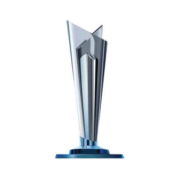
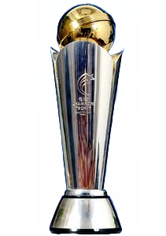

T20 WC: 2007


CT: 2002/2013

The India men's national cricket team, also known as Team India or the Men in Blue, represents India in men's international cricket. It is governed by the Board of Control for Cricket in India (BCCI), and is a Full Member of the International Cricket Council (ICC) with Test, One Day International (ODI) and Twenty20 International (T20I) status.Cricket was introduced to the Indian subcontinent by British sailors in the 18th century, and the first cricket club was established in 1792. India's men's national cricket team played its first international match on 25 June 1932 in a Lord's Test, becoming the sixth team to be granted Test cricket status. India had to wait until 1952, almost twenty years, for its first Test victory. In its first fifty years of international cricket, success was limited, with only 35 wins in 196 Tests.The team, however, gained strength in the 1970s with the emergence of players like Sunil Gavaskar, Gundappa Viswanath, Kapil Dev, and the Indian spin quartet.